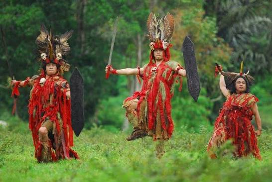

Tentang Sulawesi Utara
Sulawesi Utara adalah sebuah provinsi yang terletak di ujung utara Pulau Sulawesi, Indonesia. Dikenal sebagai "Bumi Nyiur Melambai" karena banyaknya pohon kelapa yang tumbuh di sepanjang pesisir pantai, provinsi ini memiliki ibukota di Kota Manado.
Dengan luas wilayah sekitar 13.852 km², Sulawesi Utara dikelilingi oleh lautan yang indah dan gunung-gunung berapi yang menjulang tinggi. Provinsi ini terkenal dengan keindahan Taman Laut Bunaken yang menakjubkan, Danau Tondano yang memukau, serta keanekaragaman hayati yang luar biasa.
Masyarakat Sulawesi Utara dikenal ramah, terbuka, dan menjunjung tinggi nilai-nilai torang samua basudara (kita semua bersaudara), yang mencerminkan semangat kebersamaan dan toleransi antar suku dan agama.

Sejarah & Kebudayaan
Kebudayaan Sulawesi Utara memiliki akar sejarah yang panjang dan kaya. Sejak zaman prasejarah, wilayah ini telah dihuni oleh berbagai kelompok masyarakat yang mengembangkan tradisi dan adat istiadat yang unik.
Waruga, kubur batu kuno yang ditemukan di berbagai lokasi di Minahasa, menjadi bukti bahwa peradaban di wilayah ini telah berkembang sejak ribuan tahun lalu. Tradisi-tradisi seperti Mapalus (gotong royong), Tulude (syukuran Nusa Utara), dan berbagai upacara adat lainnya masih tetap dilestarikan hingga saat ini.
Seni pertunjukan seperti Tari Kabasaran (tari perang), Tari Maengket (tari pergaulan), dan musik Kolintang menjadi kebanggaan masyarakat Sulawesi Utara dan sering ditampilkan dalam berbagai festival budaya nasional dan internasional.
Keragaman Suku Bangsa
Sulawesi Utara dihuni oleh berbagai suku bangsa yang hidup berdampingan secara harmonis
Suku Minahasa
Suku terbesar di Sulawesi Utara yang mendiami wilayah dataran tinggi Minahasa. Dikenal dengan budaya Mapalus, musik Kolintang, dan tradisi Waruga. Masyarakat Minahasa menjunjung tinggi nilai-nilai kekeluargaan dan gotong royong.
Suku Bolaang Mongondow
Suku yang mendiami wilayah Bolaang Mongondow di bagian barat Sulawesi Utara. Memiliki tradisi dan adat istiadat yang khas, termasuk rumah adat dan seni pertunjukan tradisional yang unik.
Suku Sangihe-Talaud
Suku yang mendiami kepulauan Sangihe dan Talaud di utara Sulawesi. Terkenal dengan tradisi bahari, seni tari Tulude, dan kuliner laut yang lezat. Hidup dari hasil laut dan perkebunan.
Informasi Budaya
Klik untuk membaca lebih lanjut tentang aspek-aspek budaya Sulawesi Utara
Apa itu Mapalus?
Mapalus adalah tradisi gotong royong khas masyarakat Minahasa yang dilakukan secara bergiliran. Dalam tradisi ini, anggota masyarakat saling membantu dalam berbagai kegiatan seperti pertanian, pembangunan rumah, dan acara adat. Mapalus mencerminkan semangat kebersamaan dan solidaritas yang menjadi fondasi kehidupan sosial masyarakat Minahasa.
Apa itu Waruga?
Waruga adalah kubur batu kuno berbentuk kubus yang menjadi ciri khas peradaban Minahasa kuno. Jenazah dimakamkan dalam posisi jongkok di dalam waruga yang terbuat dari batu andesit. Waruga dihiasi dengan ukiran yang menggambarkan kehidupan dan status sosial almarhum. Situs waruga terbesar terdapat di Sawangan, Minahasa Utara, dan kini menjadi objek wisata sejarah dan budaya.
Apa filosofi "Torang Samua Basudara"?
"Torang Samua Basudara" (Kita Semua Bersaudara) adalah filosofi hidup masyarakat Sulawesi Utara yang mengedepankan persaudaraan, toleransi, dan keharmonisan antar suku, agama, dan budaya. Filosofi ini menjadi perekat sosial yang kuat dan menjadikan Sulawesi Utara sebagai salah satu provinsi paling toleran dan damai di Indonesia.
Festival Budaya apa saja yang ada di Sulawesi Utara?
Beberapa festival budaya terkenal di Sulawesi Utara antara lain:
- Festival Bunaken — Festival kelautan dan budaya di Taman Laut Bunaken
- Tulude — Upacara syukuran masyarakat Nusa Utara
- Festival Tomohon — Festival bunga internasional di Kota Tomohon
- Pinawetengan Festival — Festival di situs sejarah Watu Pinawetengan
- Manado Fiesta — Pesta rakyat dan parade budaya Kota Manado